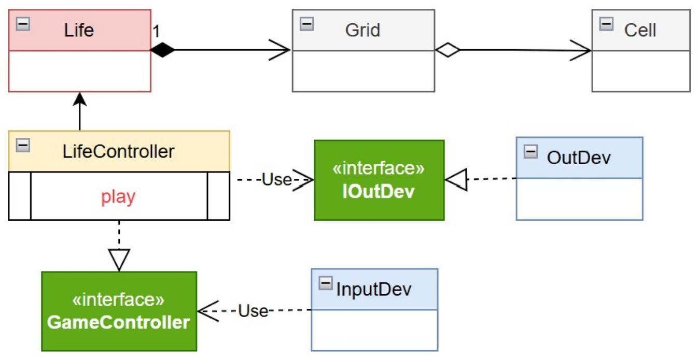

R1 Realizzare una versione in Java del gioco Life di Conway, come gioco zero-player.
Il gioco consiste nell’introdurre una Griglia di Celle il cui stato (cella ‘viva’ o cella ‘morta’)
evolve come stabilito dallle regole di ConwayLife
R2 L’utente umano deve poter:
- specificare la configurazione iniziale della griglia del gioco
- vedere l’evoluzione del gioco in forma opportuna
(si veda Problema della vista del gioco )
- fermare e far ripartire l’evoluzione del gioco
- pulire (a gioco fermo) la configurazione della griglia del gioco
// La cella è dotata di uno stato (viva o morta) e può essere impostata con opportuni accessori
public interface ICell {
void setStatus(boolean v); //primitiva
boolean isAlive(); //primitiva
void switchCellState(); //composta
}
// La griglia è un'insieme di celle di dimensione decisa dall'utente.
// Possiede accessori per impostare (set) ed estrarre (get) lo stato di ogni cella.
public interface IGrid {
public int getRowsNum(); // primitiva
public int getColsNum(); // primitiva
public void setCellValue(int x, int y, boolean state); // composta
public ICell getCell(int x, int y); // primitiva
public boolean getCellValue(int x, int y); // composta
public void reset(); // composta
}
// Life è un sistema che si occupa dell'evoluzione della griglia seguendo le regole del gioco.
public interface LifeInterface {
/** Calcola l'evoluzione dello stato alla generazione successiva */
void nextGeneration(); // primitiva
/** Restituisce lo stato di una cella specifica */
boolean isAlive(int row, int col); // composta
/** Imposta lo stato di una cella */
void setCell(int row, int col, boolean alive); // composta
/** Restituisce il numero di righe e colonne */
// int getRows();
// int getCols();
/** Restituisce la Cella */
ICell getCell(int x, int y); // composta
/** Restituisce la grid */
IGrid getGrid(); // primitiva
/** imposta tutte le celle della griglia allo stato morto*/
void resetGrids(); // composta
/** Restituisce una rappresentazione grafica testuale della grglia*/
//public String gridRep( );
}
public class CellTest {
private ICell c;
@Before
public void setup() {
System.out.println("ConwayLifeTest | setup");
c = new Cell();
}
@After
public void down() {
System.out.println("ConwayLifeTest | down");
}
@Test
public void testCellAlive() {
System.out.println("ConwayLifeTest | doing alive");
c.setStatus(true);
boolean r = c.isAlive();
assertTrue(r);
}
@Test
public void testCellDead() {
System.out.println("ConwayLifeTest | doing dead");
c.setStatus(false);
boolean r = c.isAlive();
assertTrue( !r);
}
}
public class GridTest {
private static final int nRows=5;
private static final int nCols=5;
private Grid grid;
@Before
public void setup() {
System.out.println("GridTest | setup");
grid= new Grid(nRows,nCols);
}
@After
public void down() {
System.out.println("GridTest | down");
}
@Test
public void testDims() {
System.out.println("testDims ---------------------" );
int nr = grid.getRowsNum();
int nc = grid.getColsNum();
assertTrue( nr==nRows && nc==nCols );
}
@Test
public void testCGridCellValue() {
System.out.println("testCGridCellValue ---------------------" );
grid.setCellValue(0,0,true);
assertTrue( grid.getCellValue(0,0) );
assertFalse( grid.getCellValue(0,1) );
}
@Test
public void testGridRep() {
System.out.println("testGridRep ---------------------" );
System.out.println(""+grid);
assertTrue( grid.toString().startsWith(". . . . ."));
}
@Test
public void testPrintGrid() {
System.out.println("testPrintGrid ---------------------" );
grid.setCellValue(0,0,true);
grid.setCellValue(0,1,true);
grid.setCellValue(0,2,true);
grid.setCellValue(0,3,true);
grid.setCellValue(0,4,true);
//grid.printGrid();
}
}
package main.java.test;
import static org.junit.Assert.assertFalse;
import static org.junit.Assert.assertTrue;
import org.junit.After;
import org.junit.Before;
import org.junit.Test;
import main.java.conway.domain.Life;
import main.java.conway.domain.LifeInterface;
/*
* TEST PLAN
*/
public class LifeTest {
private LifeInterface lifeModel;
@Before
public void setup() {
System.out.println("GridTest | setup");
lifeModel = new Life(5, 5);
}
@After
public void down() {
System.out.println("GridTest | down");
}
@Test
public void testSetCellAlive() {
lifeModel.setCell(1, 1, true);
assertTrue(lifeModel.isAlive(1, 1));
}
@Test
public void testSetCellDead() {
lifeModel.setCell(2, 2, true);
lifeModel.setCell(2, 2, false);
assertFalse(lifeModel.isAlive(2, 2));
}
@Test
public void testReset() {
lifeModel.setCell(3, 3, true);
lifeModel.resetGrids();
assertFalse(lifeModel.isAlive(3, 3));
}
}
